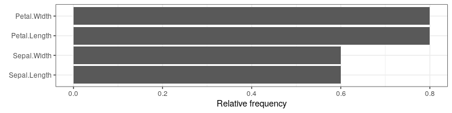

The counterfactuals package provides various (model-agnostic) counterfactual explanation methods via a unified R6-based interface. Counterfactual explanation methods (or counterfactuals for short) address questions of the form: “For input x, the model predicted y. What would need to be changed in x for the model to predict the desired outcome ỹ instead?”.
Counterfactuals for denied loan applications are a common example. Here a counterfactual could be: “The loan was denied because the amount of €30k is too high given the income. If the amount had been €20k, the loan would have been granted.”
For an introduction to the topic, see e.g. Chapter 6 of the Interpretable Machine Learning book by Christoph Molnar.
Installation
You can install the development version from GitHub with:
# install.packages("devtools")
devtools::install_github("susanne-207/counterfactuals")Get started
In this example, we train a randomForest on the iris dataset.
We then examine how a given virginica observation would have to change to be classified as versicolor.
First, we train the randomForest model to predict the Species.
Note that we leave out one observation from the training data which is our x_interest.
rf = randomForest(Species ~ ., data = iris[-150L, ])We then create an iml::Predictor object, that holds the model and the data for analyzing the model.
predictor = Predictor$new(rf, type = "prob")Now we set up an object of the counterfactual explanation method we want to use. Here we use WhatIf and since we have a classification task, we create an WhatIfClassif object.
wi_classif = WhatIfClassif$new(predictor, n_counterfactuals = 5L)For x_interest the model predicts:
x_interest = iris[150L, ]
predictor$predict(x_interest)
#> setosa versicolor virginica
#> 1 0 0.102 0.898We use the $find_counterfactuals() method to find counterfactuals for x_interest.
cfactuals = wi_classif$find_counterfactuals(
x_interest, desired_class = "versicolor", desired_prob = c(0.5, 1)
)cfactuals is a Counterfactuals object that contains the found counterfactuals and provides several methods for their evaluation and visualization.
cfactuals
#> 5 Counterfactual(s)
#>
#> Desired class: versicolor
#> Desired predicted probability range: [0.5, 1]
#>
#> Head:
#> Sepal.Length Sepal.Width Petal.Length Petal.Width
#> 1: 5.9 3.2 4.8 1.8
#> 2: 5.9 3.0 4.2 1.5
#> 3: 6.1 3.0 4.6 1.4The counterfactuals are stored in the $data field.
cfactuals$data
#> Sepal.Length Sepal.Width Petal.Length Petal.Width
#> 1: 5.9 3.2 4.8 1.8
#> 2: 5.9 3.0 4.2 1.5
#> 3: 6.1 3.0 4.6 1.4
#> 4: 6.0 2.7 5.1 1.6
#> 5: 6.0 2.9 4.5 1.5We can evaluate the results according to various measures using the $evaluate() method.
cfactuals$evaluate()
#> Sepal.Length Sepal.Width Petal.Length Petal.Width dist_x_interest nr_changed dist_train dist_target
#> 1: 5.9 3.2 4.8 1.8 0.03354520 2 0 0
#> 2: 5.9 3.0 4.2 1.5 0.06938559 2 0 0
#> 3: 6.1 3.0 4.6 1.4 0.07674200 3 0 0
#> 4: 6.0 2.7 5.1 1.6 0.05902778 3 0 0
#> 5: 6.0 2.9 4.5 1.5 0.07403484 4 0 0One visualization option is to plot the frequency of changes of each feature using the $plot_freq_of_feature_changes() method.
cfactuals$plot_freq_of_feature_changes()